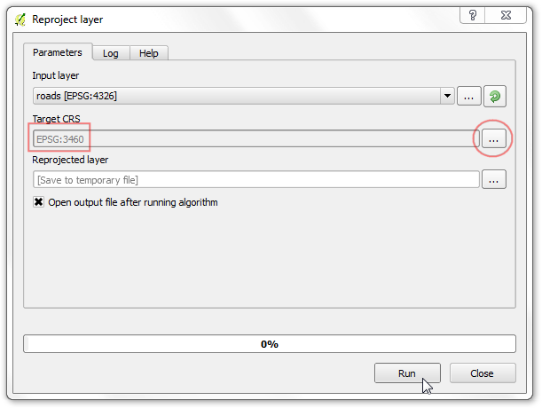
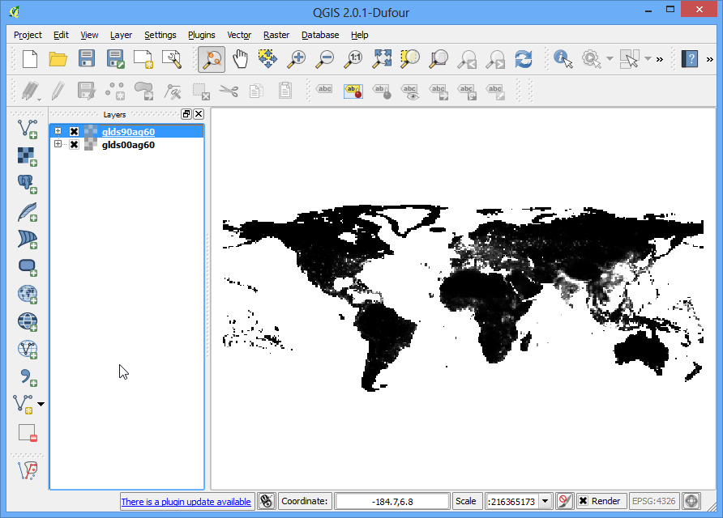
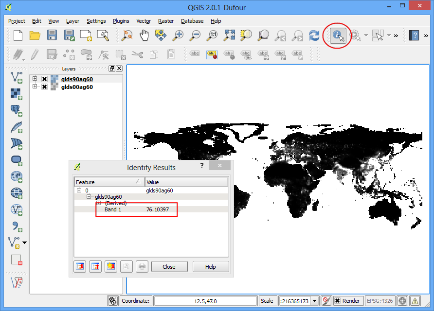
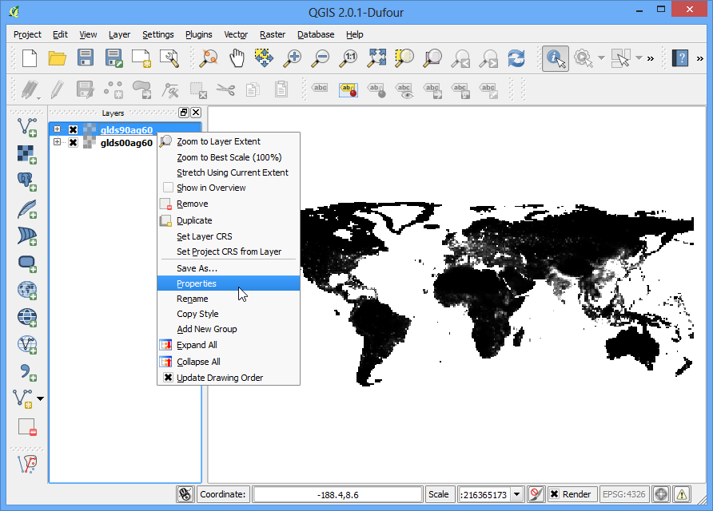
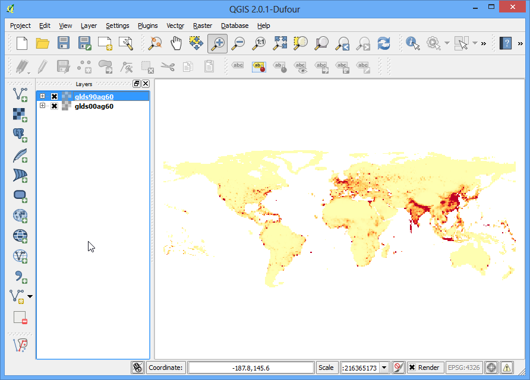
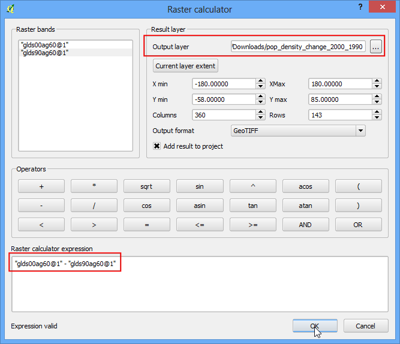
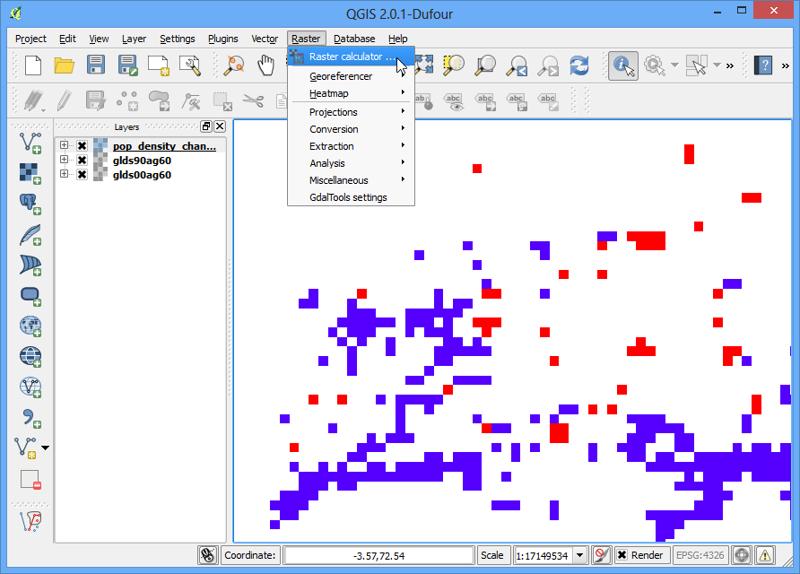
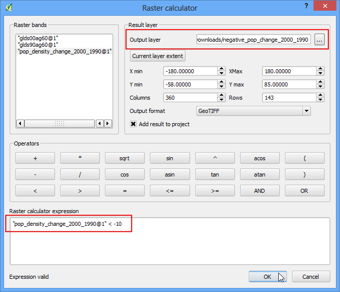
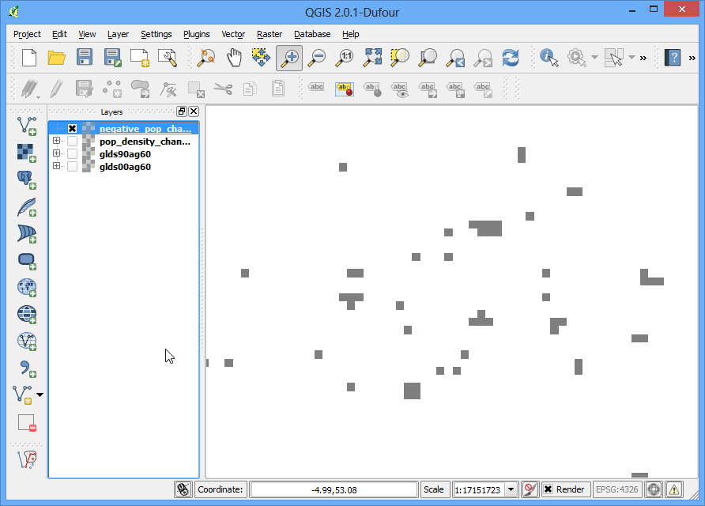

Trình bày và phân tích raster cơ bản
[ Download PDF A4 Letter ]
A lot of scientific observations and research produces raster datasets. Rasters
are essentially grids of pixels that have a specific value assigned to them. By
doing mathematical operations on these values, one can do some interesting
analysis. QGIS has some basic analysis capabilities built-in via Raster
Calculator. In this tutorial, we will explore basics on using Raster Calculator
and options available for styling rasters.
Tổng quan về nhiệm vụ
We will use population density grid data to find and visualize areas of the world
that have seen dramatic population density change between year 1990 and 2000.
Các kỹ năng bạn sẽ học được
Nhận dữ liệu
We will use the Gridded Population of the World (GPW) v3
dataset from Columbia University. Specifically, we need the Population Density Grid for the entire globe in ASCII format and for the year 1990 and 2000.
Here is how to search and download the revelant data.
- Go to the Population Density Grid, v3 download page.
Select the Data Attributes as .ascii format,
1° resolution and 1990 year. Click
Download. At this point, you may create a free account and
login, or use the Guest Download button at the bottom to
immediately download the data. Repeat the process for 2000 year
data.

You will now have 2 zip files downloaded.
For convenience, you can also download a copy of this data by clicking on following links:
gl_gpwv3_pdens_90_ascii_one.zip
gl_gpwv3_pdens_00_ascii_one.zip
Nguồn dữ liệu [GPW3]
Các bước thực hiện
Mở QGIS và vào .

- Locate the downloaded zip files. Hold down the Ctrl key and click on both
the zip files to select them. This way you are able to load both the files
in a single step.

- Each zip file contain 2 grid files. The a in the filename
suggests that the population counts were adjusted to match the UN totals. We
will use the adjusted grids for this tutorial. Select glds00ag60.asc as
the layer to add. Click OK.

- The layer doesn’t have a CRS defined, and since the grids are in lat/long,
choose EPSG:4326 as the coordinate reference system.

- Since we selected both the zip files, you will see similar dialogs once
again. Repeat the process and select glds90ag60.asc grid as the layer to
add.

Tiếp tục, chọn EPSG:4326 là CRS.

- Now you will see both the rasters loaded in QGIS. The raster is rendered as
in grayscale, where darker pixels indicate lower values and lighter pixels
indicate higher values.

- Each pixel in the raster has a value assigned. This value is the population
density for that grid. Click on Identify Features button to select the
tool and click anywhere on the raster to see the value of that pixel.

- To better visualize the pattern of population density, we would need to
style it. Right-click on the layer name and select Properties. You can also
double-click on the layer name in the TOC to bring up the Layer
Properties dialog.

- Under the Style tab, change the Render type
to Singleband pseudocolor. Next, click Classify
under Generate a new color map. You will see 5 new color
values created. Click OK.

- Back in the QGIS Canvas, you will see a heatmap-like rendering of the
raster. Repeat the same process for the other raster as well.

- For our analysis, we would like to find areas with largest population
change between 1990 and 2000. The way to accomplish this is by finding the
difference between each grid’s pixel value in both the layers. Select
.

- In the Raster bands section, you can select the layer by double-clicking
on them. The bands are named after the raster name followed by @ and band
number. Since each of our rasters have only 1 band, you will see only 1
entry per raster. The raster calculator can apply mathematical operations
on the raster pixels. In this case we want to enter a simple formula to
subtract the 1990 population density from 2000. Enter glds00ag60@1 - glds90ag60@1
as the formula. Name your output layer as pop_density_change_2000_1990.tif
and check the box next to Add result to project. Click
OK.

Sau khi hoàn thành thao tác, bạn sẽ thấy lớp dữ liệu mới được mở trong QGIS.

- This grayscale visualization is useful, but we can create a much more informative
output. Right-click on the pop_density_change_2000_1990 layer and
select Properties.

- We want to style the layer so pixel values in certain ranges get the same
color. Before we dive in to that, go to the Metadata tab and look at the
properties of the raster. Note the minimum and maximum values of this layer.

- Now go to the Style tab. Select Singleband
pseudocolor as the Render type under Band
Rendering. Set the Color interpolation to
Discrete. Click the Add entry button 4 times to create 4
unique classes. Click on an entry to change the values. The way color map
works is that all values lower than the value entered will be given the
color of that entry. Since the minmum value in our raster is just above
-2000, we choose -2000 as the first entry. This will be for the No Data
values. Enter the values and Labels for other entries as below and click
OK.

- Now you will see a much more powerful visualization where you can see areas
which has seen positive and negative population density changes. Click on
Zoom In button and draw a rectangle around Europe to
explore the region in more detail.

- Select the Identify tool and click on the Red and Blue regions
to verify that your styling rules worked as intended.

- Now let’s take this analysis one-step further and find areas with only
negative population density change. Open .

- Enter the expression pop_density_change_2000_1990@1 < -10. What this
expression will do is set the value of the pixel to 1 is if matches the
expression and 0 if it doesn’t. So we will get a raster with pixel value
of 1 where there was negative change and 0 where there wasn’t. Name the
output layer as negative_pop_change_2000_1990 and check the box next to
Add result to project. Click OK.

- Once the new layer is loaded, right-click on it and select
Properties. In the Transparency tab, add 0 as the
Additional no data value. This setting will make the pixels
with 0 values also transparent. Click OK.

Bây giờ bạn sẽ thấy các vùng có mật độ dân số âm sẽ đổi sang pixel màu xám.
